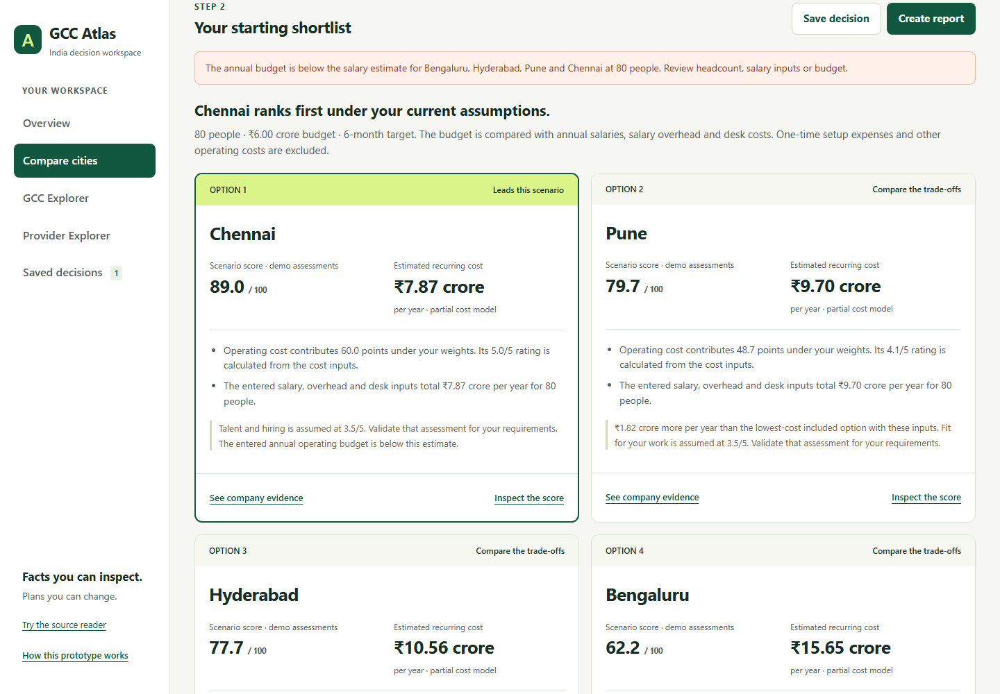
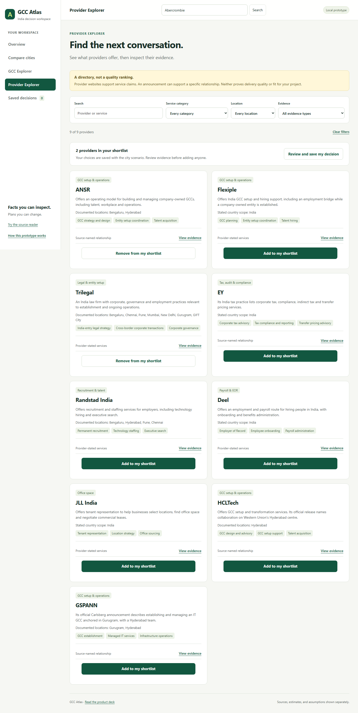

For the first India centre
A strategy or operations leader preparing a shortlist for internal approval.
The proposal
GCC Atlas connects a city scenario, selected providers and supporting evidence in one saved brief.
A strategy or operations leader preparing a shortlist for internal approval.
Compare four cities, inspect sources, shortlist providers, then save and export.
01 · The problem
A new entrant must combine company examples, hiring data, costs and referrals into one decision.
Companies, individual centres and hiring plans describe different things. Dates and scope change the comparison.
Advisers, recruiters, landlords and governments each see one part and have their own commercial objectives.
The buyer must explain why a city and provider fit, which assumptions matter, and what still needs checking.
01 · People and impact
| Who | What they know / need | Effect of uncertainty |
|---|---|---|
| Strategy / finance leader | Location, budget, ownership and approval | A shortlist that is hard to defend |
| Talent / GCC leader | Role mix, pay and hiring pace | Headline medians may miss the actual team |
| Adviser, lawyer, auditor | Structure, compliance and tax | Case-specific dependencies remain unresolved |
| Recruiter, EOR, property firm | Hiring, employment and workspace | Quotes and delivery claims need comparison |
| State agency | Policies and local incentives | Eligibility depends on the company's plan |
01 · How much does it matter?
Illustration: 40 software engineers × Flexiple's dated annual salary medians, before overhead and office costs.
This is cost exposure in a demonstration—not proven savings, equivalent talent availability, or the cost of a wrong decision.
02 · What already exists
A sourced, filterable GCC directory and new-centre information. Our smaller directory alone adds little.
Six-metro comparison tables, role information and salary benchmarks. City data is already part of their offer.
Flexiple advertises city-selection advice, entity setup, hiring, workspace and payroll support.
Proposed addition: a self-service, saved decision brief joining the buyer's inputs, provider evidence and unresolved questions.
02 · Current alternatives
| Alternative | Useful for | Question Atlas would address |
|---|---|---|
| Directories and reports | Finding companies and benchmarks | Which evidence matters for my exact decision? |
| Advisers and referrals | Context and specialist judgment | Can I retain the reasoning and compare claims? |
| Provider service pages | Discovering offerings | Which role is documented, and what is unproven? |
| Spreadsheets and internal briefs | Modelling and approval | Can inputs, sources and provider choices stay together? |
02 · What our research establishes
22 of 43 announcements name none of these outside parties. Missing mention means unknown—not unused.
03 · Choose an opportunity
One complete buyer task with an output they can inspect and revisit. Validate whether it helps a real approval.
Dates, exact roles and unknown fields make the brief reviewable. Reliability is a dependency, not a decorative feature.
Potential recurring use and commercial handoff after demand, freshness and trust are established.
03 · First customer
A strategy or operations leader at a midmarket global company, preparing an internal decision with finance and talent colleagues.
Compare locations, identify setup conversations and show management the reasoning and remaining risks.
A saved brief: requirements, city scenarios, chosen providers, evidence links and open questions.
They have a plausible role mix and budget. Exact hiring feasibility and legal advice still come from specialists.
04 · Working solution

04 · Complete the buyer journey

04 · The trust model
43 announcements retain quotations, source dates and check status. Nine providers retain claim-specific evidence.
Starting salaries are Aug 2026 software medians. They are not quotes for every role, seniority or hiring timeline.
Non-cost ratings, desk costs, overhead and weights are examples. No incentive savings or setup guarantees enter the model.
Scenario score = sum of (rating ÷ 5 × weight share × 100). Cost rating follows the entered recurring costs.
05 · Positioning
| Stakeholder | Reason to try Atlas | What still needs validation |
|---|---|---|
| Entrant / finance leader | Reproducible scenarios and a source-linked approval brief | Does it replace work they actually do? |
| Talent or GCC leader | Visible role assumptions and diligence questions | Does evidence match the hiring plan? |
| Adviser | Reuse inputs and inspect the buyer's reasoning | Would it fit the existing client workflow? |
| Provider | A relevant conversation grounded in a specific role | Will they share references and outcomes? |
| State / property ecosystem | A route to contribute dated local evidence | Will updates be reliable and comparable? |
05 · Commercial model
Free source-linked intelligence and a usable decision journey could attract entering companies.
Charge for a decision project or recurring adviser workspace only if buyers value richer evidence and monitoring.
Optional handoff to Flexiple or another provider after explicit buyer consent; no hidden effect on scores.
Flexiple is a provider too. Publish commercial relationships and apply the same evidence rules to every listed firm.
06 · AI and implementation
AI supported research, product debate, code, documentation and browser checks. Findings were checked against sources.
The preserved reader checks proposed quotations against supplied text. Live Claude access is environment-specific and unverified in the real Artifact.
Atlas calculations and explanations are deterministic. No API key is needed; sample extraction is labelled, not presented as a live response.
06 · Validate and launch
Interview entrants and advisers. Inspect their recent decision briefs, purchases, source conflicts and unresolved questions.
Observe completion, evidence inspection, explanation of rankings, saved/exported briefs and decision usefulness.
Add role-specific hiring evidence, current office quotations, official policy eligibility and permissioned outcome references.
Main risks: stale evidence, misleading precision, biased provider incentives and a workflow buyers do not need.